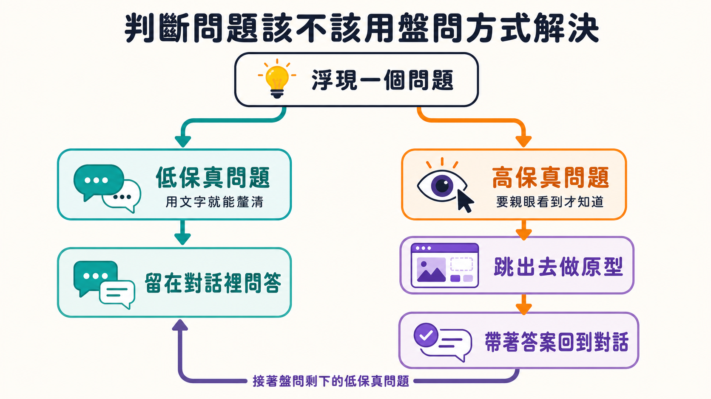
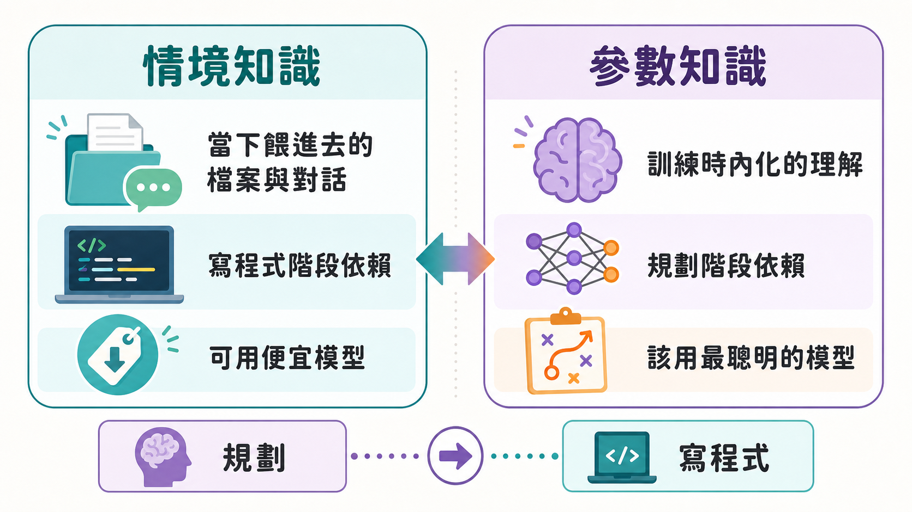

有人跟 Matt Pocock 抱怨：「我叫 Codex 用你的 Grill Me skill，結果它問了我 200 個問題。」聽到這句話，他的反應不是得意，而是皺眉。
這句抱怨本身就洩露了一個誤解。Grill Me 這套 skill 的設計初衷，從來不是讓 AI 對你連環逼供，而是讓雙方在動工前先對齊認知——透過一來一往的提問，把腦中模糊的想法逼成具體的決策。這套機制之所以會失控成 200 題大轟炸，問題往往不在 AI，而在使用的人：對方到底懂不懂規劃、懂不懂拿捏問題的範圍。skill 本身寫得並不複雜，它假設的是使用者已經具備工程判斷力，只是把這個判斷力用結構化的方式榨出來。換句話說，這是一個放大鏡，而不是一顆大腦——你原本多會規劃，用了它之後就多會規劃；你原本沒有規劃直覺，它也不會替你長出來。
這也是為什麼會有這篇整理：與其列出九個具體錯誤，不如先搞懂幾個判斷失誤背後共通的思考角度，否則就算記住九條規則，遇到第十種情境還是會踩坑。
問題有兩種畫質，你不能用同一種方式回答

第一個角度來自 Ryan Singer 的《Shape Up》裡的一組概念：問題有高保真與低保真之分。低保真問題，一句話就能問完、答完——這個路由要放在哪個網址下？這種問題不需要看到任何實際畫面，純粹是資訊交換，適合在一問一答的對話裡解決。
高保真問題完全是另一回事。這個表單該拆成好幾頁，還是塞成一頁長長的表單？這種問題問的其實是「感覺」——而感覺這種東西，沒辦法用文字描述出來，你只能親眼看到、親手用過才知道答案。硬要在純文字對話裡把這種問題「問清楚」，只會逼出一堆自己也說不準的猜測式回答，最後做出來的東西還是不對。
所以第一個常見的失誤，就是把不該用問答解決的問題硬塞進問答裡。正確做法是判斷這個問題「可不可以被盤問」——可以，就留在對話裡繼續問；不行，就先跳出去，做一個簡單的原型讓自己實際看一眼，看完之後再把學到的東西帶回原本的對話，繼續沒問完的低保真問題。這一來一回，原型階段跟盤問階段互相接力，而不是硬逼一個階段做完所有事。
範圍一旦貪心，你會同時撞上兩道牆
第二個角度是範圍（scope）的大小。很多人做規劃時容易犯的錯，是想把接下來好幾天、甚至好幾週的工作一次盤問清楚。這裡藏著兩個代價。
第一個代價跟上面提到的保真度有關：範圍拉得越大，裡面藏著的高保真問題就越多，而這些問題你光靠對話根本問不出真正的答案，只能等你實際做到那一步才會現形。與其在紙上談兵地把未來幾週的每一步都硬猜出來，不如先把眼前這一小塊做扎實、做出你真心信任的成果，再往下一塊延伸——踩在已經驗證過的地基上前進，永遠比憑空往未來規劃來得穩。
第二個代價更現實：模型是有記憶負擔的。以現在主流的前沿模型來說，大約 12 萬 token 上下是一個分水嶺，超過這條線，模型的注意力會被拉得越來越薄，判斷力隨之下滑——你可能會發現自己開場時上下文window還很乾淨，結果越聊越長，問題都還沒問完一半，模型已經開始給出奇怪的答案。這時候只能被迫中斷、交接、或壓縮對話，而這一切原本都能避免：提前把大範圍拆成幾塊小範圍，一塊一塊分別盤問，才能一直待在模型清醒的區間裡工作。
這是對話，不是面試
第三個角度，是你在對話裡的姿態：被動還是主動。很多人把 Grill Me 的體驗想像成被審訊——AI 問，你答，問到哪算哪。這種心態下，失控幾乎是必然的：AI 很容易把範圍越問越大，把問題問到過於瑣碎，你只是坐在原地被動接招。
但反過來也有另一種失誤，就是主動過了頭——明明遇到的是那種需要親眼看一眼才有答案的問題，卻硬是不肯放手交給原型，一直在對話裡糾纏細節，遲遲不肯進入真正動手的階段。
這兩種失誤的分界線，其實就是要記得一件事：這是一場對話，不是一場面試。AI 負責拋問題，但方向盤該握在你手上——什麼時候該收斂範圍、什麼時候該喊停進入實作，是你的責任，不是它的責任。
你在對話裡建立的，是資產，不是垃圾
接下來這個失誤，聽起來很基本，卻真實發生過：有人花了整場對話盤問出一份扎實的設計決策，對話視窗裡累積了十萬個 token 級別的思考結晶，然後——直接把視窗關掉，開一個全新的空白對話，重新叫 AI 生成規格文件。
這個舉動的荒謬之處在於：那個舊視窗裡裝的不是雜訊，是你剛剛親手做出的每一個判斷、每一次取捨。如果手上還有餘裕，最理想的狀況是直接在原本的對話裡接著寫程式，把決策無縫轉成程式碼。如果真的必須中斷或換人接手，正確做法是把這些決策整理成一份交接文件，而不是讓它們隨著視窗關閉一起蒸發。歸根結底，這其實是一種對「上下文管理」的意識問題——你清空對話、壓縮對話、交接對話的每一個決定，背後都該有明確的理由，而不是圖方便隨手一按。
規劃靠的是模型腦子裡本來就有的東西，寫程式靠的是你餵給它的東西

再來是一個容易被忽略、卻很關鍵的區分：模型的知識其實來自兩個完全不同的來源。一種是「情境知識」——你當下餵給它的檔案內容、你打的字、它自己查資料查回來的結果，這些都是外部餵進去的。另一種是「參數知識」——它在訓練過程中內化、儲存在自己權重裡的理解，相對不那麼可靠，卻正是盤問階段真正依賴的東西。
想一想：盤問的目的，是要 AI 主動丟出你根本沒想到的問題和建議。如果這些角度你早就想過，你老早就會把它寫進提示詞裡，變成情境知識了。正因為你沒想到，才需要靠模型「見多識廣」的內在理解幫你補上盲點——而這種內在理解，恰好只有參數量夠大、訓練夠扎實的頂級模型才靠得住。這也解釋了一個反直覺的結論：規劃階段該用最貴、最聰明的模型，但真正動手寫程式的階段，反而可以放心用便宜一點的模型——因為到了那一步，你手上已經有詳細的實作計畫、相關程式碼也都餵進去了，倚賴的幾乎全是情境知識，參數知識派不上太大用場。
一次開兩場對話，吞吐量直接翻倍
最後一個容易被忽略的技巧，說穿了很簡單，卻很少人真的做：同時開兩場盤問對話，輪流切換。做法是這樣的——回答完一個對話的問題，趁它在思考下一步時，切到另一個對話回答它的問題，再切回來。這聽起來像是分心、切換脈絡，但實際體驗更接近同時盯著兩個訊息串聊天，並不真的燒腦。通常兩場是舒服的上限，如果其中一場是需要長時間跑資料查證的任務，狀態好的時候可以撐到三場——但這已經是進階選手的玩法了。
這幾個角度合起來，其實指向同一件事：這套盤問機制不是自動駕駛，它是一面鏡子，照出你原本規劃能力的邊界在哪裡。用得好的人，靠的從來不是這套 skill 本身多聰明，而是自己對問題的保真度、範圍的大小、對話的節奏、上下文的價值、模型的選擇，都有清楚的判斷——這些判斷力練得越熟，能同時撐起的並行對話也就越多。